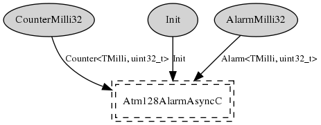

Configure hardware timer 0 for use as the mica family's millisecond timer. This component does not follow the TEP102 HAL guidelines as there is only one compare register for timer 0, which is used to implement HilTimerMilliC. Hence it isn't useful to expose an AlarmMilliC or CounterMillIC component.
